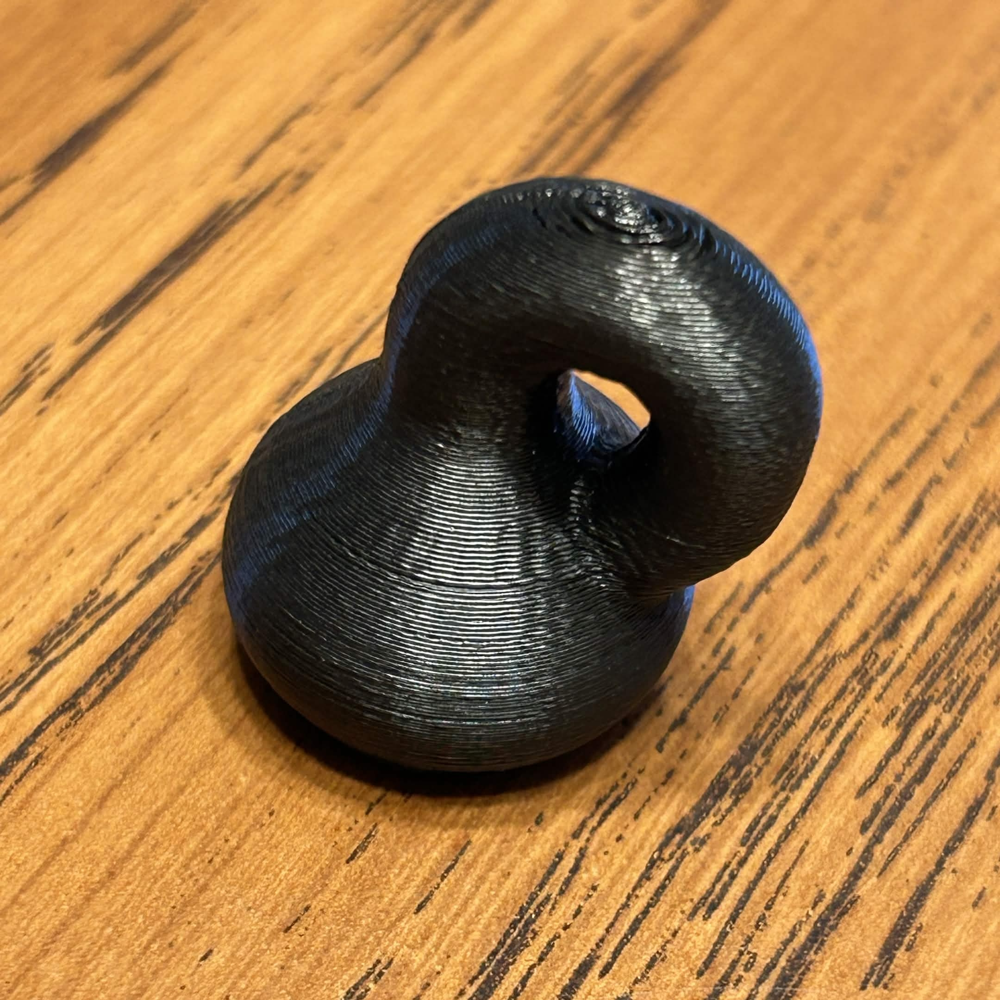

Complex Numbers, A Little Bit of Topology, and Physics...of Course
Introduction
Throughout my time as a mathematics student, I have always been curious about the complex numbers. Having not taken complex analysis yet, I figured it would be good fun to explore the realm of the complex numbers, and how they correlate to physics, given my background. Complex numbers arise in multiple areas of physics, from solving differential equations that model binary star systems of neutron stars, to electromagnetism, and even in quantum theory. Many physicists agree that complex numbers are just as real, and important, as the real numbers.
The Complex Numbers
What are the complex numbers? How do we formulate them? These are questions I had when I was a younger student first learning about these numbers. At the time, I knew that $i = \sqrt{-1}$, and that $i^2 = -1$. Now, I have a much more rigorous way to define the complex numbers. The complex numbers are simply the numbers of the form $a + bi$ where $a,b \in \mathbb{R}$ and $i^2 = -1$.
A Complex Group? The Klein Bottle
Tying in complex numbers to our class, a beautiful example of a group that relates to a beautiful geometry is the Klein bottle group, which we can eventually define with the help of the following group $$H = \langle a,b : aba^{-1} = b^{-1}\rangle.$$ The Klein bottle is an object that only can truly exist in four spacial dimensions, and therefore cannot be accurately represented in our world or comprehended in its entirety by our minds. It has no volume because it is all one-sided. While the Klein bottle group is not complex by itself, we can think of the Klein bottle as being a result of various transformations on the complex plane. For example, we can define two explicit transformations over the complex plane. Namely, $$a = z + 1$$ $$b = \bar{z} + i$$ where $z$ is a complex number and the bar over $z$ denotes the complex conjugate.

These two maps each do something unique within the complex plane. The transformation $a$ takes any complex number, and shifts it to the right by one unit. It is a translation to the right by one unit in other words. The transformation $b$ takes any complex number and reflects it about the real axis before translating it upward by one. This is what is going on geometrically with these two transformations on the complex plane.
Then define a left group action from H acting on the set of complex numbers which we will denote by $H \cdot \mathbb{C} = [ h \cdot z : e \cdot z = z, h_1 \cdot (h_2 \cdot z) = (h_1h_2) \cdot z ].$ We can then partition the complex numbers into equivalence classes via their orbits. Recall that an orbit is given by $\mathbb{C}^h = [ h \cdot z : h \in H ]$. Call the set of all the equivalence classes via our partition $\mathbb{C}/H$ which is also called the quotient space of $\mathbb{C}$ by the action of $H$. Let us explicitly state for clarification that the group $H$ is a group consisting of functions, or transformations, and the binary operation is function composition. The quotient space $\mathbb{C}/H$ has partitioned the complex numbers according to the transformations explicitly defined previously $a$ and $b$, as well as all the possible unique compositions of them.
Now we will examine only a strip of the complex plane that is of particular importance to us. Namely, the strip such that $$0 \leq \text{Re}(z) < 1.$$ Fortunately for us, we can describe every single point in the complex plane as being of the same equivalent class as one in this strip with repeated compositions of the transformation $a$. The transformation $b$ takes all vertical points in this strip and reflects them about the real axis as well as shifting them up one which is similar to twisting the bottle in on itself.
Some Informal Intuition
This idea of molding and folding the complex plane into something that is not a plane is something many people are not used to. It is intuition we as humans are not born with. Working with these abstract objects such as orbits, groups, group actions, and equivalence classes is unique and difficult to work with. A much more reasonable and understandable method to build some intuition for this is to use analogies.
When we partitioned the complex plane into equivalence classes using orbits, what we were looking to do was be able to represent every point on the plane as a different one in a specific region of the plane. It was as if we took the entire complex plane and folded it in such a way that all the points that are in the same equivalence classes hit the points in the strip we care about.
For transformation $a$, we were folding the plane to get into the strip in the first place. For $b$, we were folding the strip over itself to get this curved structure. The way we defined the equivalence classes allowed us to match negative values with positive values for both axes. What is awesome about this idea is we have just reduced the entire complex plane into a strip by redefining the geometry of the plane with these orbits and particular transformations.
Why Care at All?
This is a great question and one I find myself asking all the time when I learn something new. With this idea of rebuilding the geometry of planes, we can greatly simplify complicated problems into much simpler ones if they respect the rules of the transformations.
Allow me to present a specific example, and what better one than to give than a physics example. Consider the heat equation in two dimensions $$\frac{\partial u}{\partial t} = \frac{\partial^2 u}{\partial x^2} + \frac{\partial^2 u}{\partial y^2}.$$ Yes, this is a partial differential equation of three variables with two being second order derivatives. Normally, solving this explicitly is very difficult. But suppose you have the condition that $u(x+1,y,t)=u(x,y,t)$. This condition is very similar to what we observe with the Klein bottle transformations, but it is slightly different. Regardless, it makes the function $u$ periodic. So, every element $x + 1$ is in the same orbit as $x$ according to our transformation $a$. Then we restrict the $xy$-plane to a strip $$0 \leq x <1$$ and we must introduce a condition where $u(0,y,t)=u(1,y,t)$ because we require that the function's structure is preserved. In other words, since $u(x+1,y,t)=u(x,y,t)$ on the normal plane, we must have the same be true on the new strip we are representing $u$ on.
Normally, we would use the Fourier series or Fourier analysis to solve or approximate the solution to this differential equation on an infinite domain. But now we have restricted the domain of $x$ to be our little strip, which allows us to better understand the behavior of the function on the entire plane. The behavior on this strip tells us how the function acts on the rest of the plane due to its symmetry and periodicity. How exciting.
Concluding
Without the complex numbers, we would not have such elegant and amazing ways to reduce or simplify problems. We would not get such amazing and beautiful shapes like the Klein bottle, nor would we have solutions to various differential equations that are vital to the field of physics. I have come to appreciate complex numbers more and more since I was younger, and I hope I have provided you, the reader, with valuable insight on why complex numbers are beautiful, and why they are actually the natural extension of our number system. Additionally, we discussed informally the topic of topology, which was this notion of folding the plane in a specific way to represent various points on it. If you have not taken topology, I hope this paper has motivated you to do so. It is a truly rich area of mathematics with so many real-world applications, including the one I have presented to you today.